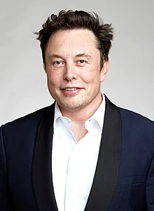

 Elon Reeve Musk FRS (/ˈiːlɒn/; born June 28, 1971) is a businessman and investor known for his key roles in the space company SpaceX and the automotive company Tesla, Inc. Other involvements include ownership of X Corp., the company that operates the social media platform X (formerly Twitter), and his role in the founding of the Boring Company, xAI, Neuralink, and OpenAI. He is the wealthiest individual in the world; as of November 2024 Forbes estimates his net worth to be US$304 billion.[4] Musk was born in Pretoria, South Africa, to Maye (née Haldeman), a model, and Errol Musk, a businessman and engineer. Musk briefly attended the University of Pretoria before immigrating to Canada at the age of 18, acquiring citizenship through his Canadian-born mother. Two years later he matriculated at Queen's University at Kingston in Canada. Musk later transferred to the University of Pennsylvania and received bachelor's degrees in economics and physics. He moved to California in 1995 to attend Stanford University but never enrolled in classes, and with his brother Kimbal co-founded the online city guide software company Zip2. The startup was acquired by Compaq for $307 million in 1999. That same year, Musk co-founded X.com, a direct bank. X.com merged with Confinity in 2000 to form PayPal. In 2002, Musk acquired US citizenship, and that October eBay acquired PayPal for $1.5 billion. Using $100 million of the money he made from the sale of PayPal, Musk founded SpaceX, a spaceflight services company, in 2002.
Elon Reeve Musk FRS (/ˈiːlɒn/; born June 28, 1971) is a businessman and investor known for his key roles in the space company SpaceX and the automotive company Tesla, Inc. Other involvements include ownership of X Corp., the company that operates the social media platform X (formerly Twitter), and his role in the founding of the Boring Company, xAI, Neuralink, and OpenAI. He is the wealthiest individual in the world; as of November 2024 Forbes estimates his net worth to be US$304 billion.[4] Musk was born in Pretoria, South Africa, to Maye (née Haldeman), a model, and Errol Musk, a businessman and engineer. Musk briefly attended the University of Pretoria before immigrating to Canada at the age of 18, acquiring citizenship through his Canadian-born mother. Two years later he matriculated at Queen's University at Kingston in Canada. Musk later transferred to the University of Pennsylvania and received bachelor's degrees in economics and physics. He moved to California in 1995 to attend Stanford University but never enrolled in classes, and with his brother Kimbal co-founded the online city guide software company Zip2. The startup was acquired by Compaq for $307 million in 1999. That same year, Musk co-founded X.com, a direct bank. X.com merged with Confinity in 2000 to form PayPal. In 2002, Musk acquired US citizenship, and that October eBay acquired PayPal for $1.5 billion. Using $100 million of the money he made from the sale of PayPal, Musk founded SpaceX, a spaceflight services company, in 2002.
Elon Reeve Musk FRS (/ˈiːlɒn/; born June 28, 1971) is a businessman and investor known for his key roles in the space company SpaceX and the automotive company Tesla, Inc. Other involvements include ownership of X Corp., the company that operates the social media platform X (formerly Twitter), and his role in the founding of the Boring Company, xAI, Neuralink, and OpenAI. He is the wealthiest individual in the world; as of November 2024 Forbes estimates his net worth to be US$304 billion.[4] Musk was born in Pretoria, South Africa, to Maye (née Haldeman), a model, and Errol Musk, a businessman and engineer. Musk briefly attended the University of Pretoria before immigrating to Canada at the age of 18, acquiring citizenship through his Canadian-born mother. Two years later he matriculated at Queen's University at Kingston in Canada. Musk later transferred to the University of Pennsylvania and received bachelor's degrees in economics and physics. He moved to California in 1995 to attend Stanford University but never enrolled in classes, and with his brother Kimbal co-founded the online city guide software company Zip2. The startup was acquired by Compaq for $307 million in 1999. That same year, Musk co-founded X.com, a direct bank. X.com merged with Confinity in 2000 to form PayPal. In 2002, Musk acquired US citizenship, and that October eBay acquired PayPal for $1.5 billion. Using $100 million of the money he made from the sale of PayPal, Musk founded SpaceX, a spaceflight services company, in 2002.
In this example, the three divs will float next to each other.
Elon Reeve Musk FRS (/ˈiːlɒn/; born June 28, 1971) is a businessman and investor known for his key roles in the space company SpaceX and the automotive company Tesla, Inc. Other involvements include ownership of X Corp., the company that operates the social media platform X (formerly Twitter)